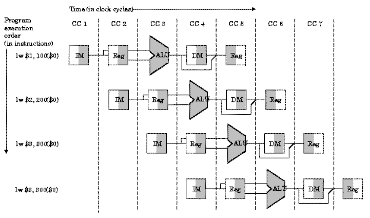

Figure 5.1. Notional diagram of a pipeline processor. The segments are arranged vertically, and time moves along the horizontal axis.
Reading Assignments and Exercises
Recall that, in Section 4, we designed a multicycle datapath based on (a) building blocks such as multiplexers for selecting an operation to produce ALU output, (b) ALUs to compute addresses and arithmetic or logical operations, and (c) components such as memories or registers for long- or short-term storage of operands or results. We also showed that the multicycle datapath is, in practice, more efficient than the single-cycle datapath.
In this section, we continue our quest for efficient computation by discovering that we can overlay single-cycle datapaths in time to produce a type of computational architecture called pipelining. We show that pipelined architectures, when they work properly and are relatively free from errors and hazards such as dependencies, stalls, or exceptions can outperform a simple multicycle datapath. Also, we discuss problems associated with pipelining that limits its usefulness in various types of computations.
Suppose you wanted to make an automobile from scratch. You might gather up the raw materials, form the metal into recognizeable shapes, cast some of the metal into an engine block, connect up fuel lines, wires, etc., to eventually (one would hope) make a workable automobile. To do this, you would need many skills - all the skills of the artisans that make autos, and management skills in addition to being an electrician and a metallurgist. This would not be an efficient way to make a car, but would definitely provide many challenges.
That is the way a multicycle datapath works - it is designed to do everything - input, output, and computation (recall the fetch-decode-execute sequence). We need to ask ourselves if this is really the best way to compute efficiently, especially when we consider the complexity of control for large (CISC) systems or even smaller RISC processors.
Fortunately, our analogy with car-making is not so far-fetched, and can actually help us arrive at a more efficient processor design. Consider the modern way of making cars - on an assembly line. Here, there is an orderly flow of parts down a conveyor belt, and the parts are processed by different stations (also called segments of the assembly line). Each segment does one thing, over and over. The segments are coordinated to exploit the sequentiality inherent in the automobile assembly process. The work gets done more smoothly (because of the orderly flow of input parts and output results), more efficiently (because each assembler at each segment of the pipeline does his or her task at what one hopes is maximum efficiency), and more reliably because there is greater consistency in one task being done repetitively (provided the assembly line is designed correctly).
A similar analogy exists for computers. Instead of a multicycle datapath with its complex control system that walks, talks, cries, and computes - let us suppose that we could build an assembly line for computing. Such objects actually exist, and they are called pipeline processors. They have sequentially-arranged stages or segments, each of which perform a specific task in a fixed amount of time. Data flows through these pipelines like cars through an assembly line.
We next consider several terms and some practical issues associated with pipeline processors.
5.1.2.1. Definition. A pipeline processor is comprised of a sequential, linear list of segments, where each segment performs one computational task or group of tasks.
5.1.2.2. Observation. A pipeline processor can be represented in two dimensions, as shown in Figure 5.1. Here, the pipeline segments (Seg #1 through Seg #3) are arranged vertically, so the data can flow from the input at the top left downward to the output of the pipeline (after Segment 3). The progress of an instruction is charted in blue typeface, and the next instruction is shown in red typeface.
There are three things that one must observe about the pipeline. First, the work (in a computer, the ISA) is divided up into pieces that more or less fit into the segments alloted for them. Second, this implies that in order for the pipeline to work efficiently and smoothly, the work partitions must each take about the same time to complete. Otherwise, the longest partition requiring time T would hold up the pipeline, and every segment would have to take time T to complete its work. For fast segments, this would mean much idle time. Third, in order for the pipeline to work smoothly, there must be few (if any) exceptions or hazards that cause errors or delays within the pipeline. Otherwise, the instruction will have to be reloaded and the pipeline restarted with the same instruction that causes the exception. There are additional problems we need to discuss about pipeline processors, which we will consider shortly.
Figure 5.1. Notional diagram of a pipeline processor.
The segments are arranged vertically, and time moves along the horizontal
axis.
5.1.2.3. Reponse Time. It is easily verified, through inspection of Figure 5.1., that the response time for any instruction that takes three segments must be three times the response time for any segment, provided that the pipeline was full when the instruction was loaded into the pipeline. As we shall see later in this section, if an N-segment pipeline is empty before an instruction starts, then N + (N-1) cycles or segments of the pipeline are required to execute the instruction, because it takes N cycles to fill the pipe.
Note that we just used the term "cycle" and "segment" synonomously. In the type of pipelines that we will study in this course (which includes the vast majority of pipeline processors), each segment takes one cycle to complete its work. Thus, an N-segment pipeline takes a minimum time of N cycles to execute one instruction. This brings to mind the performance issues discussed in Section 5.1.1.5.
5.1.2.4. Work Partitioning. In the previous section, we designed a multicycle datapath based on the assumption that computational work associated with the execution of an instruction could be partitioned into a five-step process, as follows:
5.1.2.5. Performance. Because there are N segments active in the pipeline at any one time (when it is full), it is thus possible to execute N segments concurrently in any cycle of the pipeline. In contrast, a purely sequential implementation of the fetch-decode-execute cycle would require N cycles for the longest instruction. Thus, it can be said that we have O(N) speedup. As we shall see when we analyze pipeline performance, an exact N-fold speedup does not always occur in practice. However it is sufficient to say that the speedup is of order N.
Reading Assignments and Exercises
As shown in Section 5.1.2.4, the work involved in an instruction can be partitioned into steps labelled IF (Instruction Fetch), ID (Instruction Decode and data fetch), EX (ALU operations or R-format execution), MEM (Memory operations), and WB (Write-Back to register file). We next discuss how this sequence of steps can be implemented in terms of MIPS instructions.
In order to implement MIPS instructions effectively on a pipeline processor, we must ensure that the instructions are the same length (simplicity favors regularity) for easy IF and ID, similar to the multicycle datapath. We also need to have few but consistent instruction formats, to avoid deciphering variable formats during IF and ID, which would prohibitively increase pipeline segment complexity for those tasks. Thus, the register indices should be in the same place in each instruction. In practice, this means that the rd, rs, and rt fields of the MIPS instruction must not change location across all MIPS pipeline instructions.
Additionally, we want to have instruction decoding
and reading of the register contents occur at the same time, which is
supported by the datapath architecture that we have designed thus far.
Observe that we have memory address computation in the lw
and sw instructions only, and that these are the only
instructions in our five-instruction MIPS subset that perform memory
operations. As before, we assume that operands are aligned in memory,
for straightforward access.
Recall the single-cycle datapath, which can be partitioned (subdivided) into functional units as shown in Figure 5.2. Because the single-cycle datapath contains separate Instruction Memory and Data Memory units, this allows us to directly implement in hardware the IF-ID-EX-MEM-WB representation of the MIPS instruction sequence. Observe that several control lines have been added, for example, to route data from the ALU output (or memory output) to the register file for writing. Also, there are again three ALUs, one for ALUop, another for JTA computation, and a third for adding PC+4 to compute the address of the next instruction.
Figure 5.2. Partitioning of the MIPS single-cycle datapath
developed previously, to form a pipeline processor.
The segments are arranged horizontally, and data flows from left
to right [Maf01,MK98].
We can represent this pipeline structure using a
space-time diagram similar to Figure 5.1, as shown in Figure 5.3.
Here four load instructions are executed sequentially, which are
chosen because the lw instruction is the only one in our
MIPS subset that consistently utilizes all five pipeline segments.
Observe also that the right half of the register file is shaded to
represent a read operation, while the left half is shaded to represent
write.

Figure 5.3. Partitioning of the MIPS single-cycle datapath
developed previously, with replication in space, to form a pipeline
processor that computes four lw instructions. The
segments are arranged horizontally, and data flows from left to right,
synchronously with the clock cycles (CC1 through CC7)
[Maf01,MK98].
In order to ensure that the single-cycle datapath conforms to the pipeline design constraint of one cycle per segment, we need to add buffers and control between stages, similar to the way we added buffers in the multicycle datapath. These buffers and control circuitry are shown in Figure 5.4 as red rectangles, and store the results of the i-th stage so that the (i+1)-th stage can use these results in the next clock cycle.
Figure 5.4. Addition of control and buffer circuits to
Figure 5.3 produces the MIPS pipelined datapath [Maf01,MK98].
In summary, pipelining improves efficiency by first regularizing the instruction format, for simplicity. We then divide the instructions into a fixed number of steps, and implement each step as a pipeline segment. During the pipeline design phase, we ensure that each segment takes about the same amount of time to execute as other segments in the pipeline. Also, we want to keep the pipeline full wherever possible, in order to maximize utilization and throughput, while minimizing set-up time.
In the next section, we will see that pipeline processing has some difficult problems, which are called hazards, and the pipeline is also susceptible to exceptions.